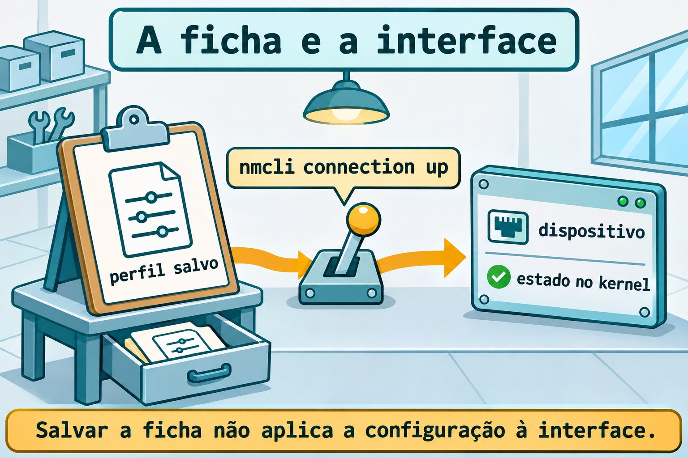
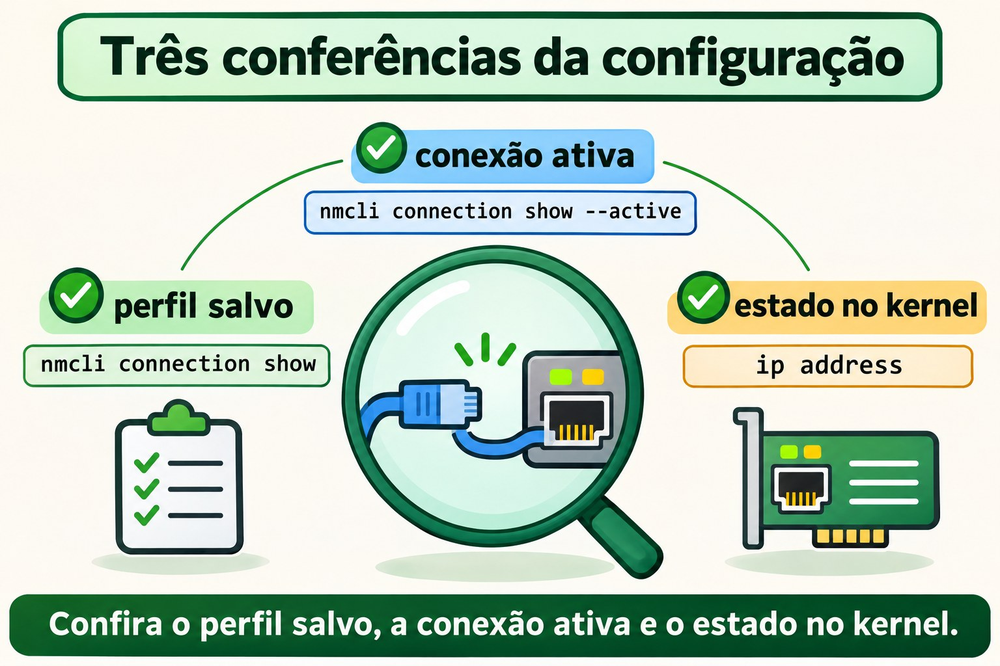
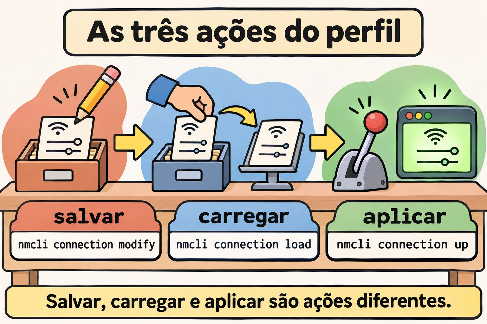

Aula 11.2 · NetworkManager e nmcli
No Windows Server, você distingue a placa da configuração aplicada a ela. No Linux com NetworkManager, essa distinção aparece como dispositivo e perfil de conexão. Na Aula 11.1 você leu endereços, prefixos e rotas; agora vai salvar uma configuração, ativá-la e comprovar o que sobrevive ao reboot. Você fará o mesmo exercício na Rocky e no Debian, sem migrar a interface usada pelo SSH.
Núcleo desta aula: dispositivo é a interface; perfil é a configuração salva; ativar aplica o perfil ao dispositivo. Salvar, carregar e aplicar são operações diferentes. O resto é aprofundamento.
| Ficha | |
|---|---|
| Módulo | M11 · Rede, aula 2 de 5 |
| Quando | Semana 16 |
| Ao final | Você cria um perfil persistente, configura IPv4 e IPv6, distingue DNS salvo de DNS em uso e reconhece um keyfile |
| Pré-requisitos | Aula 11.1; acesso SSH, sudo e console noVNC das VMs 201 e 202 |
| Tempo | Cerca de 90 minutos, mais 30 minutos para repetir sem consultar |
| Snapshots | m11a2-inicio e m11a2-fim nas duas VMs |
1 · Aquecimento
Responda antes de abrir o terminal. Confira o gabarito no fim.
- O que o
/26informa em um endereço IPv4? ip route gettesta a entrega de um pacote ou consulta uma decisão local?- Um serviço em
127.0.0.1fica disponível para outras máquinas só porque a VM tem IP na rede?
2 · Por que importa
Você recebe um servidor que funcionava ontem. Alguém adicionou um endereço com ip address add; depois do reboot, ele sumiu. Outra pessoa editou um arquivo de conexão e esperou que a interface mudasse imediatamente. Nos dois casos, faltou distinguir o estado atual da configuração persistente.
| O que você observa | Onde conferir | O que isso demonstra |
|---|---|---|
| Endereço atual | ip address | O que o kernel usa agora |
| Perfil salvo | nmcli connection show | A configuração conhecida pelo NetworkManager |
| Perfil ativo | nmcli connection show --active | Qual configuração está aplicada |
| Arquivo persistente | Keyfile em disco | O que o serviço poderá carregar de novo |
Seu trabalho termina quando a configuração esperada está em uso e volta depois do reboot. A presença de um arquivo, sozinha, não fecha essa verificação.
3 · Modelo mental
Pense em uma sala com uma ficha de instalação. A sala é o dispositivo. A ficha diz qual endereço, quais rotas e quais servidores DNS usar. Guardar uma ficha no arquivo não muda a sala; alguém precisa executar a instalação descrita nela.
keyfile no disco → perfil carregado → ativação → dispositivo → estado no kernel
salvar carregar aplicar conferir com ipVocê pode guardar vários perfis para uma interface. No exercício, haverá um perfil ativo e outro apenas para planejamento. O nome do perfil serve para você reconhecê-lo; o UUID identifica aquela configuração sem depender do nome.


Ponte Windows
| Windows Server | NetworkManager | Ideia que você reaproveita |
|---|---|---|
| Adaptador de rede | Dispositivo em nmcli device | A interface que recebe a configuração |
| Configuração de IP do adaptador | Perfil em nmcli connection | Endereço, rotas e DNS como conjunto |
| Consultar IP atual | ip -br address | Conferir o estado efetivo |
| Configuração persistente | Perfil salvo em disco | Reaplicar depois do boot |
| Servidores DNS do adaptador | Propriedades ipv4.dns e ipv6.dns | Resolução é uma configuração própria |
O perfil de conexão do NetworkManager não é o perfil de firewall Público ou Privado do Windows. Aqui ele descreve como configurar a interface.
4 · O essencial
Dispositivo e conexão não são sinônimos
nmcli device status lista interfaces e o estado de gerenciamento. nmcli connection show lista perfis. Um perfil pode existir sem estar ativo; uma interface pode existir sem ser gerenciada pelo NetworkManager.
nmcli device status
nmcli connection show
nmcli connection show --activeNa Rocky, NetworkManager é o gerenciador esperado. No Debian, descubra primeiro quem administra a interface real. A Aula 11.3 trata de ifupdown, NetworkManager e systemd-networkd; instalar outro gerenciador não significa entregar a placa a ele.
Salvar, carregar e aplicar
| Operação | Comando | Efeito |
|---|---|---|
| Criar perfil | nmcli connection add | Salva uma nova configuração |
| Alterar perfil | nmcli connection modify | Atualiza as propriedades salvas |
| Recarregar arquivos | nmcli connection reload | Relê perfis do disco |
| Carregar um arquivo | nmcli connection load ARQUIVO | Lê aquele keyfile |
| Ativar perfil | nmcli connection up PERFIL | Aplica a configuração |
| Reaplicar mudanças compatíveis | nmcli device reapply INTERFACE | Atualiza a conexão já ativa |
modify não equivale a up. Depois de editar um perfil ativo, confira o estado efetivo; para este lab, reative somente o perfil da interface interna. A reativação da placa do SSH pode interromper seu acesso.
IPv4 fixo é endereço com prefixo
ipv4.method manual usa os endereços informados em ipv4.addresses. ipv4.method auto solicita configuração automática, normalmente por DHCP em Ethernet. Nunca use shared neste exercício: esse modo compartilha conectividade e não representa um cliente DHCP comum.
Um perfil interno não precisa de gateway. Configure ipv4.never-default yes para que ele não se torne candidato à rota padrão IPv4. A mesma separação existe para IPv6.
IPv6 tem configuração própria
| Propriedade | Ideia |
|---|---|
ipv6.method auto | Configuração automática IPv6 |
ipv6.method manual | Endereços IPv6 informados no perfil |
ipv6.addresses | Endereço com prefixo IPv6 |
ipv6.gateway | Próximo salto padrão IPv6 |
ipv6.never-default yes | Impede rota padrão por esse perfil |
Na interface interna, você usará 2001:db8:11::10/64. Esse prefixo é de documentação e ficará somente dentro da VM, sem bridge, cabo ou anúncio para a rede do curso. Não o instale na interface Ethernet real.
DNS salvo não é consulta bem-sucedida
ipv4.dns e ipv6.dns armazenam endereços de servidores DNS. Com método automático, ignore-auto-dns yes descarta os servidores recebidos automaticamente daquela família. Isso não cria um servidor DNS nem comprova que ele responde.
O sistema reúne as informações DNS das conexões ativas segundo sua configuração. Para observar os dados da interface, use nmcli device show. A integração com resolv.conf será detalhada na Aula 11.4.
No lab, você gravará DNS em um perfil inativo. Não o ativará: os endereços de exemplo não atendem consultas e não devem entrar na resolução usada pelo sistema.


Keyfiles e permissões
Os perfis no formato keyfile usam seções como [connection], [ipv4] e [ipv6]. O diretório de configuração persistente é /etc/NetworkManager/system-connections/; arquivos em /run/NetworkManager/system-connections/ são temporários.
Um keyfile pode conter segredos. Use dono root:root e modo 600. O NetworkManager recusa arquivos com acesso indevido a outros usuários. Prefira nmcli para alterações comuns; depois de editar um arquivo diretamente, carregue-o e ative o perfil quando for o momento de aplicar.
Rocky × Debian
| Item | Rocky 9, VM 201 | Debian 13, VM 202 |
|---|---|---|
| Nome e acesso | rocky-lab, ssh rocky-lab | debian-lab, ssh debian-lab |
| IP real do curso | 10.1.0.51 | 10.1.0.52 |
| Pacote | NetworkManager | network-manager |
| Unidade | NetworkManager.service | NetworkManager.service |
| Interface real | Normalmente gerenciada por NetworkManager | Identifique o gerenciador antes de mudar |
| Exercício desta aula | Perfil dummy interno | Mesmo perfil, com preparação isolada se necessário |
| Keyfile persistente | /etc/NetworkManager/system-connections/ | Mesmo diretório |
5 · Lab guiado
Repita a sequência na Rocky e no Debian como student. Use uma sessão Bash por VM para manter as variáveis do exercício. Os perfis começam com m11a2-; a única interface alterada será m11dummy0, que não tem ligação com a rede externa.
Antes de mudar qualquer configuração de rede: abra o console noVNC e confira que consegue entrar como student e usar sudo. Mudanças na placa usada pelo SSH exigem esse console ou um plano de retorno testado. Este lab não altera o IP, o gateway ou o perfil da placa real.
Passo 0 · Guardar o ponto de volta. No nó Proxmox que hospeda cada VM:
Palpite: um snapshot no mesmo storage protege você contra a perda desse storage?
qm snapshot 201 m11a2-inicio
qm snapshot 202 m11a2-inicio
qm listsnapshot 201
qm listsnapshot 202Saída esperada: as listas contêm m11a2-inicio.
Verifique: confirme as duas VMs antes de continuar. Snapshot é ponto de retorno do lab, não substituto do backup.
Passo 1 · Registrar a rede e o gerenciador. Dentro de cada VM:
Palpite: instalar nmcli prova que o NetworkManager já administra sua placa?
test ! -e "$HOME/m11a2" && mkdir -m 0700 "$HOME/m11a2"
ip -br address | tee "$HOME/m11a2/enderecos-inicio.txt"
ip -4 route | tee "$HOME/m11a2/rotas-inicio.txt"
systemctl is-active NetworkManager.service
systemctl is-enabled NetworkManager.service
systemctl is-active networking.service systemd-networkd.serviceSaída esperada: a rede real e o estado das unidades. Uma unidade ausente pode aparecer como not-found; um serviço inativo não significa falha da rede inteira.
Verifique: se a pasta já existir, pare para não misturar tentativas. Registre quem mantém a placa do curso. Não pare esse gerenciador.
Passo 2 · Preparar NetworkManager sem entregar a placa real. Na Rocky, o serviço deve estar ativo; confira nmcli --version e siga ao Passo 3. No Debian com serviço já ativo, também siga ao Passo 3.
Palpite: dois gerenciadores tentando configurar a mesma placa tornam o diagnóstico mais simples ou mais difícil?
No Debian sem NetworkManager ativo, use a preparação abaixo somente se ele estiver ausente ou desabilitado. Se estiver mascarado, falhando ou habilitado mas parado, investigue essa condição antes de continuar.
if test -e /etc/NetworkManager/conf.d/99-m11a2-isolado.conf; then
printf 'Existing lab configuration; stop here.\n'
else
sudo install -d -m 0755 /etc/NetworkManager/conf.d
sudo tee /etc/NetworkManager/conf.d/99-m11a2-isolado.conf > /dev/null <<'EOF'
[main]
dns=none
[keyfile]
unmanaged-devices=*,except:interface-name:m11dummy0
EOF
sudo apt update
sudo apt install -y network-manager
sudo systemctl start NetworkManager.service
printf 'debian-isolado\n' > "$HOME/m11a2/preparacao"
fiSaída esperada: NetworkManager inicia com todas as interfaces fora do seu gerenciamento, exceto m11dummy0; dns=none impede que ele altere a resolução do sistema nessa preparação.
Verifique: pare se o teste inicial indicar que o arquivo já existe. Confira nmcli device status, ip -br address e ip -4 route: a placa real mantém sua configuração e aparece como não gerenciada pelo NetworkManager nesta preparação. Você não migrou ifupdown nem systemd-networkd.
Passo 3 · Identificar as duas listas. Nas duas VMs, com NetworkManager ativo:
Palpite: um perfil sem dispositivo na lista deixou de existir?
nmcli --version
nmcli device status
nmcli -f NAME,UUID,TYPE,DEVICE connection show
nmcli connection show --active
ip link show m11dummy0Saída esperada: perfis e dispositivos reais; o último comando informa que m11dummy0 ainda não existe.
Verifique: confirme que não existe perfil com nome m11a2-interno ou m11a2-plano. Se algum desses recursos já existir, pare e identifique a tentativa anterior.
Passo 4 · Criar IPv4 e IPv6 fixos na interface interna.
Palpite: sem gateway no perfil, os dois endereços locais deixarão de existir?
sudo nmcli connection add type dummy ifname m11dummy0 \
con-name m11a2-interno connection.autoconnect no \
ipv4.method manual ipv4.addresses 192.0.2.10/24 \
ipv4.never-default yes ipv6.method manual \
ipv6.addresses 2001:db8:11::10/64 ipv6.never-default yes
nmcli -f connection.id,connection.interface-name,connection.autoconnect,ipv4,ipv6 \
connection show m11a2-interno
sudo nmcli connection up m11a2-internoSaída esperada: o perfil é salvo e ativado; NetworkManager cria a interface dummy com os endereços informados.
Verifique: ip -br address show dev m11dummy0 mostra IPv4 e IPv6. Se IPv6 estiver desativado no kernel, registre a condição e ajuste o pré-requisito do lab antes de prosseguir; não altere a política da VM por tentativa.
Passo 5 · Conferir o estado que realmente entrou.
Palpite: uma rota conectada da interface interna substitui a rota padrão da placa real?
nmcli connection show --active
nmcli -f GENERAL,IP4,IP6 device show m11dummy0
ip -4 route show dev m11dummy0
ip -6 route show dev m11dummy0
ip -4 route show default
ping -4 -c 2 -W 2 192.0.2.10
ping -6 -c 2 -W 2 2001:db8:11::10Saída esperada: perfil ativo, endereços e rotas internas. Os pings recebem respostas da própria VM.
Verifique: a rota padrão IPv4 continua pela interface original. Esses pings comprovam endereços locais; não comprovam comunicação com outro computador.
Passo 6 · Planejar DNS sem publicar DNS de exemplo.
Palpite: preencher ipv4.dns em um perfil inativo já muda as consultas do sistema?
sudo nmcli connection clone m11a2-interno m11a2-plano
sudo nmcli connection modify m11a2-plano connection.autoconnect no \
ipv4.dns 192.0.2.53 ipv4.ignore-auto-dns yes \
ipv6.dns 2001:db8:11::53 ipv6.ignore-auto-dns yes
nmcli -f connection.id,connection.autoconnect,ipv4.dns,ipv4.ignore-auto-dns,ipv6.dns \
connection show m11a2-plano
nmcli connection show --activeSaída esperada: DNS de exemplo salvo em m11a2-plano; somente m11a2-interno continua ativo nessa interface.
Verifique: não ative m11a2-plano. O clone tem outro UUID, mas herdou os endereços e a interface do original. Uma clonagem exige revisar as propriedades herdadas antes de usar.
Passo 7 · Ler o keyfile criado. Localize pelo UUID, sem presumir o nome do arquivo:
Palpite: renomear o perfil obriga o UUID a mudar?
PLANO_UUID=$(nmcli -g connection.uuid connection show m11a2-plano)
PLANO_FILE=$(sudo grep -rlF --include='*.nmconnection' "uuid=$PLANO_UUID" /etc/NetworkManager/system-connections/)
printf '%s\n' "$PLANO_FILE"
sudo stat -c '%U:%G %a %n' "$PLANO_FILE"
sudo sed -n '/^\[connection\]/,/^\[/p' "$PLANO_FILE"Saída esperada: exatamente um caminho, dono root:root e modo 600. O trecho mostra a seção de conexão do perfil.
Verifique: antes de usar o caminho nas quebras, confirme que ele é um único arquivo do perfil m11a2-plano dentro do diretório indicado. Não mostre arquivos de outras conexões: eles podem conter segredos.
Passo 8 · Preparar a persistência.
Palpite: connection.autoconnect no impede até uma ativação manual?
sudo nmcli connection modify m11a2-interno connection.autoconnect yes
sudo systemctl enable NetworkManager.service
nmcli -g connection.autoconnect connection show m11a2-interno
nmcli -g connection.autoconnect connection show m11a2-planoSaída esperada: yes para o perfil interno e no para o plano.
Verifique: serviço no boot e autoconexão do perfil são duas condições distintas. O reboot será feito depois das quebras; você ainda não comprovou persistência.
Decida 1
Você alterou ipv4.addresses no perfil, mas ip address ainda mostra o endereço anterior. O que faz primeiro?
A) Reinicia a VM inteira. B) Confere perfil e dispositivo, depois aplica a mudança à interface correta. C) Apaga a rota padrão.
| Se você marcou | Resultado | Por quê |
|---|---|---|
| A | Prematuro | Você pode aplicar e verificar a mudança localmente |
| B | Certo | Salvar e aplicar são etapas diferentes |
| C | Sem relação | O endereço salvo não foi aplicado ao dispositivo |
Decida 2
Um Debian usa ifupdown na placa do SSH. Instalar NetworkManager autoriza ativar outro perfil nessa placa?
A) Sim, a última instalação decide. B) Sim, se o nome do perfil for diferente. C) Não; primeiro é preciso planejar quem gerencia a interface e como voltar.
| Se você marcou | Resultado | Por quê |
|---|---|---|
| A | Incorreto | Instalação não é migração planejada |
| B | Incorreto | Nomes diferentes não isolam o mesmo dispositivo |
| C | Certo | A posse da interface e o retorno precisam estar claros |
6 · Quebre e conserte
Faça as quebras somente em m11dummy0 e nos dois perfis da aula. A interface real permanece sob o gerenciador original. Se você abriu outra sessão Bash, recalcule PLANO_UUID e PLANO_FILE pelo Passo 7.
Quebra 1 · Mudou a ficha, não a interface
Palpite: o endereço antigo desaparece só porque você editou o perfil?
sudo nmcli connection modify m11a2-interno ipv4.addresses 192.0.2.20/24
nmcli -g ipv4.addresses connection show m11a2-interno
ip -4 address show dev m11dummy0Sintoma: o perfil salvo mostra 192.0.2.20/24; a interface ainda usa 192.0.2.10/24.
Investigação: compare a propriedade do perfil com a saída de ip. Você consultou duas camadas diferentes.
Causa: connection modify salvou a mudança sem reativar a conexão em uso.
Conserto: aplique somente o perfil interno e depois restaure seu endereço inicial:
sudo nmcli connection up m11a2-interno
ip -4 address show dev m11dummy0
sudo nmcli connection modify m11a2-interno ipv4.addresses 192.0.2.10/24
sudo nmcli connection up m11a2-internoVerifique: a primeira ativação coloca .20; a segunda devolve .10. IPv6 permanece configurado.
Prevenção: ao registrar uma mudança, anote o perfil salvo e a conferência do estado aplicado.
Quebra 2 · Funciona na mão, não volta sozinho
Palpite: um perfil com autoconexão desligada pode funcionar quando você pede up?
sudo nmcli connection modify m11a2-interno connection.autoconnect no
sudo nmcli connection down m11a2-interno
nmcli connection show --active
sudo nmcli connection up m11a2-interno
nmcli -g connection.autoconnect connection show m11a2-internoSintoma: a ativação manual funciona, mas a propriedade continua no.
Investigação: confira conexão ativa e connection.autoconnect. Estar ativo agora não prova ativação automática no próximo boot.
Causa: você autorizou a ativação manual sem autorizar a autoconexão do perfil.
Conserto: sudo nmcli connection modify m11a2-interno connection.autoconnect yes.
Verifique: a propriedade volta a yes; no fechamento, o reboot confirmará o resultado.
Prevenção: confira a unidade habilitada e a autoconexão do perfil antes do teste de persistência.
Quebra 3 · O arquivo existe, mas é recusado
Palpite: um keyfile legível por qualquer usuário é aceito por estar no diretório certo?
sudo chmod 0644 "$PLANO_FILE"
sudo nmcli connection load "$PLANO_FILE"
sudo stat -c '%U:%G %a %n' "$PLANO_FILE"
sudo journalctl -u NetworkManager.service -n 20 --no-pagerSintoma: o carregamento explícito falha; o arquivo mostra modo 644. A mensagem informa a recusa do arquivo, com detalhes nas mensagens do serviço.
Investigação: confira o caminho, o dono e as permissões. O perfil já carregado pode continuar listado; isso não demonstra que a nova leitura foi aceita.
Causa: outros usuários conseguem ler o keyfile, contrariando a proteção exigida pelo NetworkManager.
Conserto: restaure as permissões do perfil de planejamento e carregue-o:
sudo chown root:root "$PLANO_FILE"
sudo chmod 0600 "$PLANO_FILE"
sudo nmcli connection load "$PLANO_FILE"Verifique: o carregamento termina sem erro e stat mostra root:root 600. O perfil continua inativo.
Prevenção: crie perfis com nmcli; ao copiar um keyfile, confira dono e modo antes de carregar.


Limpeza
Palpite: apagar o perfil de planejamento exige desligar a placa usada pelo SSH?
sudo nmcli connection delete m11a2-plano
nmcli connection show --active
nmcli -g connection.autoconnect connection show m11a2-internoSaída esperada: o plano é removido; o interno permanece ativo com autoconexão yes.
Verifique: guarde o perfil interno até o reboot de conferência. A remoção final e o retorno do Debian preparado nesta aula vêm logo depois desse teste.
7 · Armadilhas
| Erro comum | O que fazer | Por quê |
|---|---|---|
| Confundir perfil e dispositivo | Comparar connection show e device status | São objetos diferentes |
| Salvar e presumir aplicação | Conferir com ip depois de ativar | Estado salvo não é estado efetivo |
| Editar a placa do SSH sem retorno | Abrir noVNC antes | A mudança pode cortar o acesso |
| Instalar outro gerenciador e ativar tudo | Definir quem controla cada interface | Dois gerenciadores podem disputar a configuração |
Usar shared no lugar de auto | Escolher o método pelo objetivo | Compartilhamento não é cliente DHCP comum |
| Clonar sem revisar | Conferir interface, endereços, DNS e autoconexão | O clone herda propriedades |
| Ativar DNS de exemplo | Manter o plano inativo | Endereço salvo não significa servidor acessível |
Usar reload para aplicar IP | Carregar e depois ativar quando necessário | Relê arquivo, não reativa a interface |
Deixar keyfile com modo 644 | Usar root:root 600 | Perfis podem conter segredos |
8 · Quiz
Responda sem consultar o laboratório.
- Qual diferença existe entre dispositivo, perfil salvo e conexão ativa?
- Você editou um keyfile. O que
connection loadfaz e o que ainda falta para aplicar? - Um endereço adicionado só com
ip address addcomprova persistência? - Para que servem
ipv4.never-defaulteipv6.never-defaultno exercício? - Um perfil tem DNS configurado e está inativo. Isso comprova que o sistema usa aquele DNS?
- Por que um
upbem-sucedido não comprova que a conexão voltará no próximo boot?
9 · Cola
| Quero... | Comando |
|---|---|
| Listar dispositivos | nmcli device status |
| Listar perfis | nmcli connection show |
| Ver perfis ativos | nmcli connection show --active |
| Inspecionar perfil | nmcli connection show m11a2-interno |
| Inspecionar estado da interface | nmcli device show m11dummy0 |
| Ativar perfil interno | sudo nmcli connection up m11a2-interno |
| Permitir autoconexão | sudo nmcli connection modify m11a2-interno connection.autoconnect yes |
| Recarregar arquivos | sudo nmcli connection reload |
| Carregar um keyfile | sudo nmcli connection load "$PLANO_FILE" |
| Conferir o kernel | ip -br address show dev m11dummy0 |
Flashcards: dispositivo → interface; perfil → configuração salva; up → ativar; reload → reler arquivos; autoconexão → ativação automática permitida; keyfile → perfil em disco.
Revise em D+1, D+3, D+7 e D+21. Refaça a primeira quebra sem consultar e explique onde cada comando buscou sua informação.
10 · Checklist e fechamento
- [ ] Distingo dispositivo, perfil e conexão ativa
- [ ] Identifico o gerenciador antes de alterar a interface real
- [ ] Configurei IPv4 e IPv6 fixos na interface interna nas duas distros
- [ ] Mantive gateway e DNS da rede real fora do exercício
- [ ] Comparei configuração salva com estado no kernel
- [ ] Consertei as três quebras sem alterar a placa do SSH
- [ ] Reconheço dono e permissões de um keyfile
Último exercício: antes do reboot, confirme .10, IPv6 e autoconexão yes no perfil interno. Explique por que isso ainda precisa do teste abaixo.
Reboot de conferência: em cada VM, rode sudo systemctl reboot, acompanhe pelo noVNC e reconecte pelo alias. Depois:
nmcli connection show --active
ip -br address show dev m11dummy0
ip -4 route show defaultSaída esperada: o perfil interno voltou, com 192.0.2.10/24 e 2001:db8:11::10/64; a rota padrão continua na placa original.
Verifique: compare com o inventário inicial da interface real. Você comprovou persistência do perfil interno, não migrou a configuração da Ethernet.
Retorno ao estado de rede inicial: remova o perfil do exercício nas duas VMs:
sudo nmcli connection delete m11a2-interno
ip -br address
ip -4 routeNo Debian que recebeu a preparação isolada, confirme o arquivo ~/m11a2/preparacao antes de executar o retorno abaixo. Não execute esse bloco onde NetworkManager já estava ativo antes da aula.
cat "$HOME/m11a2/preparacao"
sudo systemctl disable --now NetworkManager.service
sudo rm -- /etc/NetworkManager/conf.d/99-m11a2-isolado.conf
systemctl is-active NetworkManager.service
systemctl is-enabled NetworkManager.serviceO serviço fica inativo e desabilitado, como na preparação inicial; o pacote permanece instalado para a Aula 11.3. Não execute nmcli nesse Debian após o retorno, pois o cliente pode solicitar a ativação do serviço por D-Bus.
Verifique: nas duas VMs, confira o endereço real e a rota padrão com ip; guarde os registros em ~/m11a2 no diário do laboratório. Se o dispositivo interno ainda existir após apagar o perfil, remova somente ele com sudo ip link delete m11dummy0.
Snapshot de fim: no nó Proxmox, depois do retorno:
qm snapshot 201 m11a2-fim
qm snapshot 202 m11a2-fim11 · Na vida real
Missão, só leitura. Em um servidor que você administre ou tenha autorização para observar, consulte primeiro o serviço e os endereços:
systemctl is-active NetworkManager.service
ip -br address
ip -4 route
ip -6 routeSomente se NetworkManager já estiver ativo, consulte também nmcli device status, nmcli connection show --active e as propriedades sem segredos de um perfil conhecido. Não inicie um gerenciador parado para fazer esta missão.
- Qual interface atende a rede de serviço e quem a gerencia?
- O nome do perfil corresponde ao nome da interface ou você estava presumindo isso?
- O que está salvo e o que está aplicado? Quais evidências sustentam sua resposta?
- Existe comprovação de persistência no registro de mudança, ou apenas uma captura antes do reboot?
12 · Aprofundar quando quiser
man nmcli: objetos, filtros e operações de conexão.man nm-settings-nmcli: métodos IP, DNS e autoconexão.man nm-settings-keyfile: seções, diretórios e proteção dos arquivos.man NetworkManager.conf:dns=nonee seleção de dispositivos não gerenciados.- Ethernet com NetworkManager na família RHEL 9: aplicação dos métodos de endereço.
- Keyfiles na família RHEL 9: armazenamento persistente dos perfis.
- Interface interna com IPv4 e IPv6 na família RHEL 9: uso de
dummypara testes locais.
DeepTutor (http://10.1.0.149:3782, KB "Curso Linux Sysadmin"):
!explica dispositivo, perfil salvo e conexão ativa com a metáfora da ficha de instalação!feynman alterei o perfil, mas ip address não mudou: critique meu diagnóstico e minha ordem de aplicação!quiz Aula 11.2, 6 perguntas sobre nmcli, persistência, DNS, IPv6 e keyfiles, uma por vez
Gabarito comentado
Aquecimento
- O comprimento do prefixo de rede, em bits. Ele permite calcular a sub-rede; não representa uma porta nem o número do host.
- Consulta a decisão local de roteamento. Não transmite um pacote para comprovar entrega.
- Não. Loopback atende a própria máquina; publicar em outro endereço exige um bind apropriado e um caminho permitido.
Quiz
- Dispositivo é a interface; perfil é o conjunto de propriedades salvo; conexão ativa é a aplicação de um perfil ao dispositivo. Consulte
device status, o perfil e a lista de conexões ativas. - Carrega aquele arquivo no NetworkManager. Depois, uma ativação aplica o perfil;
ipconfere o resultado no kernel. - Não. A adição altera o estado atual; a persistência depende da configuração mantida pelo gerenciador e deve ser conferida após o reboot.
- Impedem que o perfil interno forneça a rota padrão de cada família. As rotas conectadas dos seus prefixos continuam existindo.
- Não. O valor está salvo no perfil; ele precisa estar ativo e participar da configuração de resolução para ser usado. Mesmo isso não comprova resposta do servidor DNS.
upé um pedido manual. A volta automática depende do serviço, da autoconexão e da disponibilidade do dispositivo. O teste de reboot confere o conjunto.
← Aula 11.1 · TCP/IP para quem administra · Índice de aulas · Aula 11.3 · Rede no Debian →